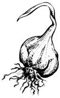
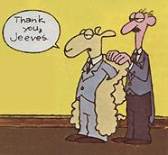
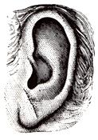

Issue # 90 - November/December 1984
Essence of Garlic
Two chemists at the University of Minnesota have discovered a means of synthesizing the active ingredient in garlic. The researchers believe that the new synthetic product, which even smells like the real thing, could prove to be useful in medical studies. Those of you who have long touted the homegrown original will be glad to hear that garlic's active ingredient, allyl methyl trisulfide, has recently been the object of much research. Scientists are confirming its ability to inhibit blood clotting and are further investigating possible beneficial effects on serum cholesterol levels and other blood factors.
Broccoli Stalk
Vegetarians make better hunters-at least according to a recent article in Sports Afield magazine. The author posits that some herbivorous animals-such as deer-may have the ability to detect the carnivorous odor of predators-such as wolves, dogs, and people. The author suggests that a couple of weeks of vegetarianism may help hunters put up a winter's worth of meat.
Subsidized Timber Harvests
The U.S. Forest Service has been held to account for its timber sales in the West, and the results should prove embarrassing to the budget-minded Reagan administration. Figures released by the General Accounting Office (GAO) revealed that 70% of the Forest Service timber sales in the West, excluding Washington and Oregon, lost money in 1981 and '82. The Forest Service claims that future cuts from reforested land will make up for the loss, but the GAO says that's unlikely.
And, according to Earth First! magazine, not one region in the West, including the Pacific Northwest, earned more revenue for the government than was spent for administrative and roadbuilding costs in that region. Nationwide, the Forest Service debt in 1982 was $234 million. Now that only marginally profitable timberlands remain out West, the timber companies are looking to the government to subsidize their harvests. Ironically, the Reagan administration, which has called for a return to private enterprise and personal initiative, has been magnanimous.
Supersheep
It looks as if genetic engineering might turn out to be useful around the homestead. Some Australian scientists are developing a sheep-one-third larger than average-that will shed its wool without the mess of shearing. To remove the wool from your genetically engineered marvel, you would give it a capsule to slow down hair growth for 24 hours. After that time the hair would resume normal growth, leaving a weak area at the base of the coat. All you'd have to do is snap the wool right off. So when the next shearing time comes around, pause and think . . . someday soon you may well be calling it plucking time.
The Return of the Wood Borer
One of the incidental benefits of pollution in New York Harbor was that marine borers, mollusks that can eat wooden wharf pilings at a disturbing rate, abandoned the harbor filth for cleaner waters. Some unwelcome evidence that pollution control measures have been successful there is that the borers have returned.
Pine panels were submerged in the harbor during the spring of last year to check the severity of the infestation. When the panels were removed that fall, up to 90% of the wood had been destroyed. Scientists are hoping to find a less drastic means of controlling the borer this time around, and have had some success with a rosewood extract that weakens the mollusks' shells, making it difficult for them to bore deeply into the wood.
Anatomy of an Earlobe
A particular crease in the earlobe indicates an increased risk of developing coronary artery disease, the number one killer of Americans today, says William J. Elliott, M.D., of Washington University School of Medicine in St. Louis. The crease in question commonly begins where the earlobe attaches to the head and angles diagonally toward the back edge of the ear. It can be faint or very deep and obvious, occurring in one ear or both. In Elliott's 1,000patient study, the earlobe crease more accurately predicted the likelihood of coronary artery disease than some other, better-known factors, like high blood pressure. But don't panic if on checking in your mirror you discover you have such a crease: There's an important difference between risk factors and diagnostic tests. If you have an ear crease, it might be wise to see a doctor for a bloodpressure check and a cholesterollevel test to determine if you have coronary artery disease.
Adding a look at the earlobes to a checkup takes only a few seconds, costs nothing, and could lead doctors to earlier diagnosis of heart disease, says Elliott. And the earlier it is diagnosed, the easier it is to treat.
|
 |
|
 |
|
 |
|
|